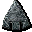
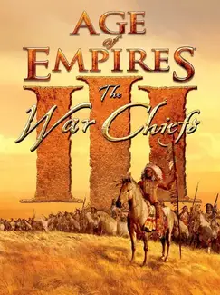

AoE III: The WarChiefs |
|
| Tiempo de juego | No Jugado |
| Última actividad | Nunca |
| Añadido | 20/11/2025 16:12:04 |
| Modificado | 20/11/2025 16:33:09 |
| Estado de finalización | Not Played |
| Librería | Playnite |
| Fuente | |
| Plataforma | PC (Windows) |
| Fecha de lanzamiento | 17/10/2006 |
| Puntuación de la Comunidad | 81 |
| Puntuación de la Crítica | 70 |
| Puntuación de usuario | |
| Género | Real Time Strategy (RTS) Simulator Strategy |
| Desarrollador | Ensemble Studios |
| Editor | MacSoft Games Microsoft Game Studios |
| Característica | Multiplayer Single Player |
| Enlaces | 🌟Definitive Edition |
| Tag | |
El juego base nos trajo la colonización, pero faltaba la otra cara de la moneda. The WarChiefs es la primera expansión de Age of Empires III y se centra exclusivamente en las civilizaciones nativas americanas.
Y ojo, no juegan igual que los europeos. Son asimétricos, agresivos y tienen mecánicas que cambian el ritmo de la partida por completo.
Con una campaña que sigue la saga de la familia Black (ahora con Nathaniel y Chayton luchando en la Guerra de Independencia y las Guerras Indias), The WarChiefs demostró que para ganar no siempre necesitás la fábrica más grande, sino la estrategia más astuta.